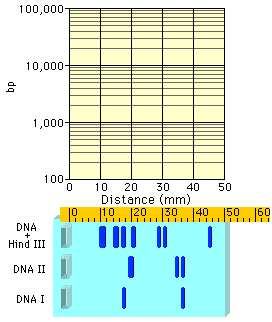

When the data obtained for the marker DNA is plotted on semilog graph paper, it is an almost straight line. This is the standard curve.
| Hint: Be very careful when working with log-based numbers. Small mistakes in reading from the y-axis translate into big mistakes in determining base-pair lengths. |


In your lab, you will use the standard curve to determine the fragment sizes of the EcoRI digest. On the next two pages, you practice the procedure using two samples with unknown fragment sizes, DNA I and DNA II.
 Continue to Practice Problem I.
Continue to Practice Problem I.